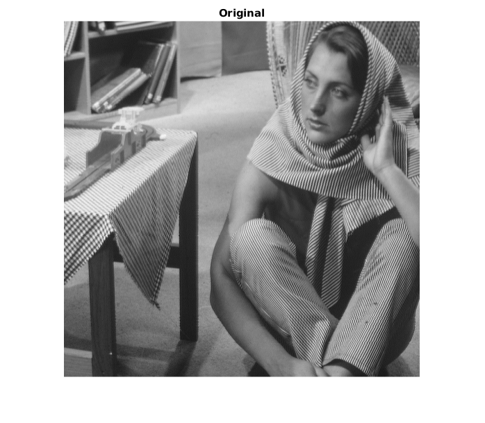

Contents
Task 1
clc; close all; clear;
for alpha=0:0.5:1
mask = fspecial('laplacian', alpha);
figure; freqz2(mask); title(['Frequency response. \alpha = ' num2str(alpha)]); drawnow;
end
Task 2
clc; close all; clear;
I = im2double(imread('zelda2.pgm'));
figure; imshow(im2uint8(I)); title('Original'); drawnow;
Low-pass filter
PQ = paddedsize(size(I));
[U, V] = dftuv(PQ(1), PQ(2));
D_0 = 150;
H1 = double(sqrt(U.^2 + V.^2) <= D_0);
H2 = exp(-(U .^ 2 + V .^ 2) / (2 * D_0 ^ 2));
H = {H1, H2};
S = {'Ideal','Gaussian'};
for i = 1:2
F = fft2(I, size(H{i}, 1), size(H1, 2));
g = real(ifft2(H{i} .* F));
g = g(1:size(I, 1), 1:size(I, 2));
F = fftshift(fft2(g));
figure; imshow(g, []); title([S{i} ' low-pass filter (D_0 = ' num2str(D_0) ')']); drawnow;
figure; imshow(log(1 + abs(F)), []); title([S{i} ' low-pass filter (D_0 = ' num2str(D_0) '). Image spectrum']); drawnow;
end
При применении идеального фильтра низких частот возникают ложные контуры, это связано с эффектом Гиббса. При применении фильтра Гаусса
такого эффекта не наблюдается, так как он является фильтром с непрерывной ПФ.
Task 3
clc; close all; clear;
I = im2double(imread('zelda2.pgm'));
High-pass filter
PQ = paddedsize(size(I));
[U, V] = dftuv(PQ(1), PQ(2));
D_0 = 150;
H1 = double(sqrt(U.^2 + V.^2) > D_0);
H2 = 1 - exp(-(U .^ 2 + V .^ 2) / (2 * D_0 ^ 2));
H = {H1, H2};
S = {'Ideal','Gaussian'};
for i = 1:2
F = fft2(I, size(H{i}, 1), size(H1, 2));
g = real(ifft2(H{i} .* F));
g = g(1:size(I, 1), 1:size(I, 2));
F = fftshift(fft2(g));
figure; imshow(I + g, []); title([S{i} ' high-pass filter (D_0 = ' num2str(D_0) '). Filtered + original']); drawnow;
figure; imshow(g, []); title([S{i} ' high-pass filter (D_0 = ' num2str(D_0) '). Filtered']); drawnow;
figure; imshow(log(1 + abs(F)), []); title([S{i} ' high-pass filter (D_0 = ' num2str(D_0) '). Image spectrum']); drawnow;
end
Полученные результаты соответствуют результатам, полученным при применении фильтров нижних частот. Эффект звона не так бросается в
глаза, однако это можно заметить, если посмотреть на профильтрованное изображение без оригинального.
Task 4
clc; close all; clear;
I = imread('rice.png');
figure; imshow(I); title('Original'); drawnow;
PQ = paddedsize(size(I));
[U, V] = dftuv(PQ(1), PQ(2));
H = 1 + 1 * ((U / size(I,1)) .^ 2 + (V / size(I,2)) .^ 2);
F1 = fft2(I, size(H, 1), size(H, 2));
g1 = real(ifft2(H .* F1));
g1 = uint8(g1(1:size(I, 1), 1:size(I, 2)));
g1_eq = histeq(g1);
figure; imshow(g1_eq); title('Laplacian -> Equalize'); drawnow;
I_eq = histeq(I);
PQ = paddedsize(size(I));
[U, V] = dftuv(PQ(1), PQ(2));
H = 1 + 1 * ((U / size(I, 1)) .^ 2 + (V / size(I, 2)).^2);
F2 = fft2(I_eq, size(H, 1), size(H, 2));
g2 = real(ifft2(H .* F2));
g2 = uint8(g2(1:size(I, 1), 1:size(I, 2)));
figure; imshow(g2); title('Equalize -> Laplacian'); drawnow;
figure; imshow(g2-g1_eq,[]); title('Difference'); drawnow;
Визуально они не очень сильно отличаются, однако при построении разницы видно, что в случае применения эквализации до фильтрации вся верхняя
часть изображения "осветлилась", что выглядит не так естественно.
Task 5
clc; close all; clear;
I = im2double(imread('zelda2.pgm'));
figure; imshow(I); title('Original'); drawnow;
M = size(I,1);
N = size(I,2);
n = 1;
u_0 = (-1) ^ n * fix(0.3 * M / n) - 0.5;
v_0 = -0.75 * u_0;
A = 0.5;
x = 0:(M - 1);
y = 0:(N - 1);
r = zeros(M,N);
for i = 1:M
for j = 1:N
r(i,j) = A * sin (2*pi * (u_0 * x(i) / M + v_0 * y(j) / N) + 1);
end
end
J = I + r;
figure; imshow(J); title('Noised image'); drawnow;
[U, V] = dftuv(M, N);
D_1 = sqrt((U - u_0) .^ 2 + (V - v_0) .^ 2);
D_2 = sqrt((U + u_0) .^ 2 + (V + v_0) .^ 2);
[D_0, rsnr] = fminsearch(@(x) -minSNR(x, I, J, D_1, D_2), 50);
H = 1 - exp(-D_1 .* D_2 / (2 * D_0 ^ 2));
F = fft2(J, size(H, 1), size(H, 2));
g = real(ifft2(H .* F));
g = g(1:size(J, 1), 1:size(J, 2));
figure; imshow(g); title(['Filtered image. SNR = ' num2str(-rsnr) ', D_0 = ' num2str(D_0)]); drawnow;
PSF = fspecial('gaussian', 60, 10);
J_edge = edgetaper(J, PSF);
[D_0, rsnr_edge] = fminsearch(@(x) -minSNR(x, I, J_edge, D_1, D_2), 50);
F = fft2(J_edge, size(H, 1), size(H, 2));
g_edge = real(ifft2(H .* F));
g_edge = g_edge(1:size(J, 1), 1:size(J, 2));
figure; imshow(g_edge); title(['Filtered after edgetaper image. SNR = ' num2str(-rsnr_edge) ', D_0 = ' num2str(D_0)]); drawnow;
figure; mesh(abs(H)); title('Amplitude-frequency response'); drawnow;


Размывание краев у изображения позволило сгладить артефакты на границах
изображения, что увеличило визуальное качество, а, кроме того, SNR.
Task 6
clc; close all; clear;
mask = [-1 2 -1; -2 5 -2; -1 2 -1];
figure; freqz2(mask); title('Frequency renspose of W'); drawnow;
figure; freqz2(mask'); title('Frequency renspose of W^T'); drawnow;
I = im2double(imread('barbara.png')); figure; imshow(I); title('Original'); drawnow;
I1 = imfilter(I, mask); figure; imshow(I1); title('Filtered with W image'); drawnow;
I2 = imfilter(I, mask'); figure; imshow(I2); title('Filtered with W^T image'); drawnow;

Маска W позволила выделить вертикальные контуры, маска W^T -- горизонтальные.